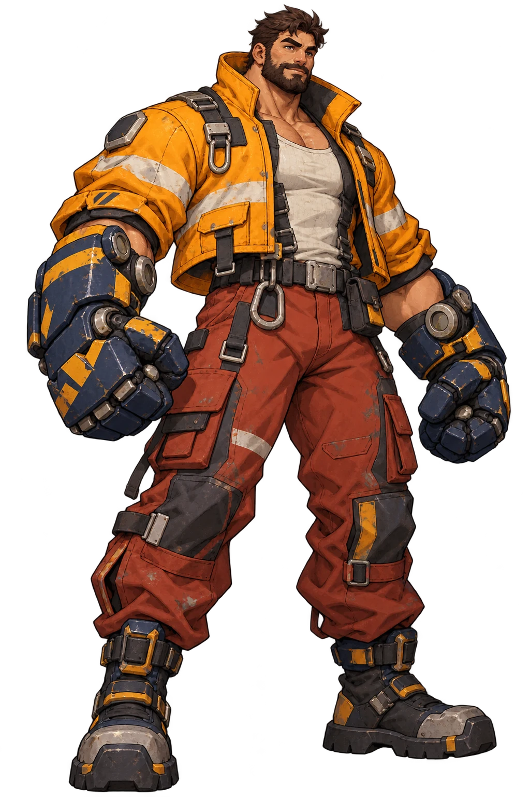
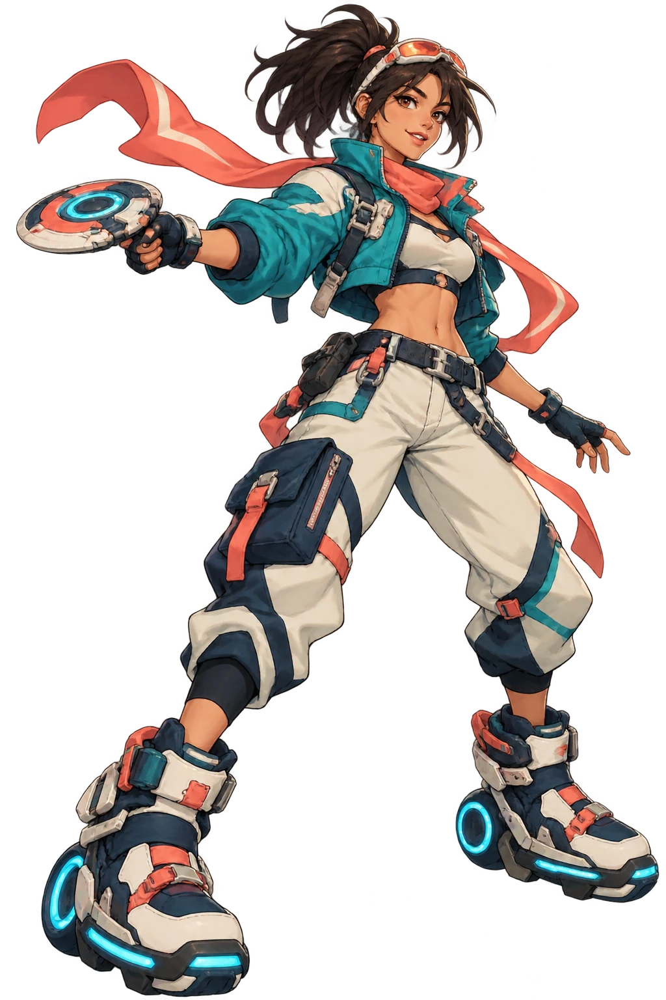

THE CITY IS YOUR ARENAFIND
FIND
YOUR FIGHT.
Twelve fighters. Five districts. One city in motion. Pick a rival, master your skills, and make your own route through Meridian.


HALO STATION / MERIDIAN CITY01 / THE CREWTWELVE WAYS
TWELVE WAYS
TO WIN.
Every fighter has a different rhythm. Try them in Training, challenge the CPU, or bring a friend into a free duel.
02 / THE CITYFIVE DISTRICTS.
FIVE DISTRICTS.
ONE ARENA.
Fight above the rail, beside the tide, under glass, at the foundry, and through the market after dark.
03 / THE RULES
YOUR MOVE.
Start with a free match. Learn each fighter’s three-hit chain, two skills, and ultimate. Your next round is one click away.
TRY TRAINING ↗W A S DMove, jump, crouch
SPACEThree-hit attack chain
I / OTwo character skills
PUltimate
TOUCHOn-screen controls